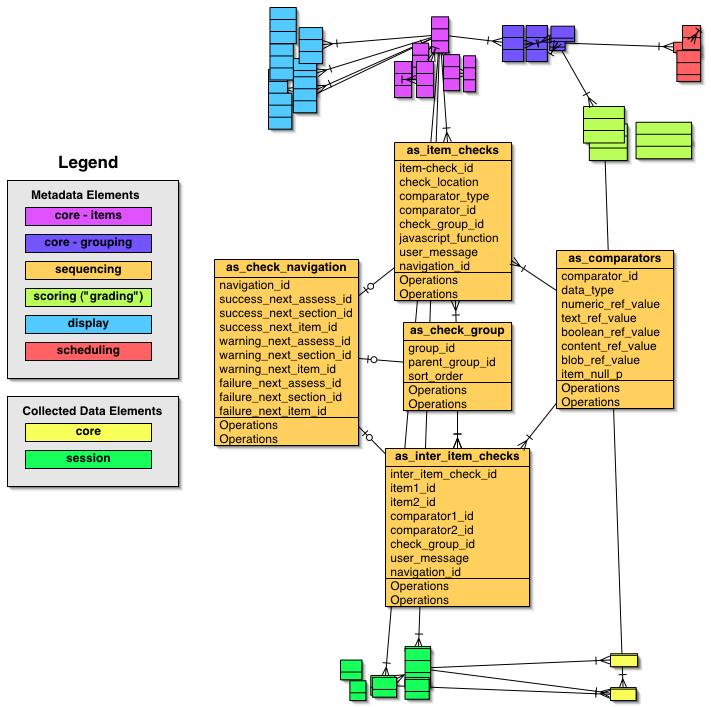

Sequencing
Along with Data Validation and Versioning, probably the most vexing
problem confronting the Assessment package is how to handle conditional
navigation through an Assessment guided by user input. Simple branching
has already been accomplished in the "complex survey" package via hinge
points defined by responses to single items. But what if
branching/skipping needs to depend on combinations of user responses to
multiple items? And how does this relate to management of data
validation steps? If branching/skipping depends not merely on what
combination of "correct" or "in range" data the user submits, but also
on combinations of "incorrect" or "out of range" data, how the heck do
we do this?
One basic conceptual question is whether Data Validation is a
distinct process from Navigation Control or not. Initially we thought
it was and that there should be a datamodel and set of procedures for
checking user input, the output of which would pipe to a separate
navigation datamodel and set of procedures for determining the user's
next action. This separation is made (along with quite a few other
distinctions/complexities) in the IMS "simple sequencing" model
diagrammed below). But to jump the gun a bit, we think that actually it
makes sense to combine these two processes into a common
"post-submission user input processing" step we'll refer to here as
Sequencing. (Note: we reviewed several alternatives in the archived
prior discussions here.
So here's the current approach. First, we think that the QTI
components
nicely capture the essential pieces needed for both Data Validation and
Navigation Control (the combination of which we're referring to as
Sequencing). But though not explicitly part of the QTI schema,
implicitly there is (or should be) another component:
- a destination that defines which is the next
item/section/form to be presented to the user based on the evaluation
of the first four elements; It appears to us that this could include
the optional Data Validation step, in that certain rule evaluation
results may product a "no move" destination requiring the user to
remain at the current item and perform some additional action (change
the result or provide an additional comment/justification)
Next we note that there are two scopes over which Sequencing needs to
be handled:
- intra-item: checks pertaining to user responses to a single item
- inter-item : checks pertaining to user responses to more than
one item; checks among multiple items will be built up pairwise
So how might we implement this in our datamodel? Consider the
"sequencing" subsystem of the Assessment package:

Here is how this might work:
- Each intra-item "rule" (eg "age < 90") is a row in the
as_item_checks table, which has columns for a "comparator" (EQ, NE, LT,
LE, GT, GE, IN), a "conjunction" ("and", "or", "not"), and columns for
the target value to be compared (the "content_value" is an version_id
in cr_versions for images etc).
Thus to say that a user's response must be greater than or equal
to 0
and less than one would involve insertion of two rows into
as_item_checks (in abbreviated pseudo-sql):
- insert into as_item_checks
(comparator,numeric_value,conjunction) values (GE,0,'and')
- insert into as_item_checks
(comparator,numeric_value,conjunction) values (LT,1,'and')
Then when a user submits a response to this item, the
as_item_checks
table would be queried as part of the "get_assessment_info" proc to get
these parameters, which would then be passed to some procedure that
checks the user's response by converting the "GE", say, to an actual
numeric comparison in some switch structure (unless there's a cleverer
way to do this via uplevel'ing, upvar'ing or exec'ing).
As long as these criteria aren't grouped (other than the
default "single group" implicit in such a statement, the
as_check_groups table isn't needed. However, if you want to say a
user's response must be greather than or equal to 0 and less than one
OR greater than 10, then you'd insert a third row into as_item_checks
and two rows into as_check_groups:
- insert into as_check_groups (conjunction) values ('or')
then use this new check_group_id = 234 (eg) to insert into the
as_item_checks rows:
- insert into as_item_checks
(comparator,numeric_value,conjunction,check_group_id) values
(GE,0,'and',234)
- insert into as_item_checks
(comparator,numeric_value,conjunction,check_group_id) values
(LT,1,'and',234)
- insert into as_check_groups (conjunction) values ('or')
then use this new check_group_id = 235 (eg) to insert into the
as_item_checks row:
- insert into as_item_checks
(comparator,numeric_value,conjunction,check_group_id) values
(GT,10,'and',235)
If the grouping were more complex, then the parent_group_id
field would
get used to define the hierarchical grouping.
- Each inter-item "rule" (eg "age < 90" or "gender =
male") is a row in the as_inter_item_checks, which has columns for each
of the two items to be compared in this rule, similar to the use in
as_item_checks; each rule is a row in this table. Each row thus
supports a pairwise check, so to test for three items would involve
three rows:
- insert into as_inter_item_checks (item1_flds,item2_flds)
values (item1_vals,item2_vals)
- insert into as_inter_item_checks (item1_flds,item3_flds)
values (item1_vals,item3_vals)
- insert into as_inter_item_checks (item2_flds,item3_flds)
values (item2_vals,item3_vals)
Obviously, this schema quickly becomes unworkable since 2^n rows
are
required for n items, but I can't see needing more than several such
checks for any real case; in fact I've only encountered the need for
two items to be checked against each other in real applications.
However, if there's a more clever way to do this without falling into
the Bottomless Combinatorial Pit, I'm keen to hear it. ;-)
Groups and ordering of these inter-item checks would be handled
by adding rows to as_check_groups as before.
- Navigation information is removed to the
as_check_navigation table, each row of which defines by
form/section/item ids where to user is to be taken based on evaluation
of the top-level group (ie parent_group_id is null) for that item or
inter-item check group. This table would store what is to happen (ie
where the user is to go) depending on whether the item/inter-item
checks evaluate to "success" (ie everything is fine so proceed),
"warning" (something isn't exactly right but isn't flagrantly wrong;
with an explanation we'll take that value), or "error" (nope, that's
right out; resubmit the damn data idjit!").
Specific Entities
- Item-checks (as_item_checks) define 1..n ordered
evaluations of a user's response to a single Item. These can occur
either via client-side Javascript when the user moves focus from the
Item, or server-side once the entire html form comes back. They are
associated (related) to as_items.
The goal is to have a flexible, expressive grammar for these
checks to support arbitrary types of checks, which will be input
validation ("Is the user's number within bounds?"; "Is that a
properly formatted phone number?"). One notion on check_sql. Instead of
using comparators we store the whole SQL command that makes up this
check with a predefined variable "value" that contains the response of
the user to the item the item_check is related to. If we want to make
sure the value is between 0 and 1 we store "0 < :value < 1" with
the check. Once an item is submitted, the system looks up the related
checks for this item and replaces in each of them ":value" with the
actual response.
Item Checks thus will have these attributes:
- item_check_id
- cr:name - identifier
- cr:description - Explanation what this check does
- check_location - client-side or server-side
- javascript_function - name of function that gets called when
focus moves
- user_message - optional text to return to user if check is
true
- check_sql - The sql that contains the check
- navigation_id - references as_check_navigation
- Inter-Item-checks (as_inter_item_checks) are
similar to Item-Checks but operate over multiple Items. They are server
sided checks that are associated with as_sections defining if a section
should be displayed or with as_items, defining if an item should be
displayed.
The goal is to have a way of telling if a section shall be displayed or
not depending on the section-checks. This way you could say that you
only display this section if the response to item(1234) "Color of your
eye" was "blue" and the response to item(4231) "Color of your hair" was
"red". Sadly we can't use such an easy way of checking the ":value" as
we do with item_checks, as we do not know which item this refers to.
Instead we store the item_id like this ":item_1234". This way the
check_sql would look like ":item_1234 == 'blue' AND :item_4231 ==
'red'". Additionally other variables might be defined by the API at a
later
stage, e.g. ":current_percentage", which would be replaced by the
current percentage value (aka score) that subject had in the test so
far. It might be interesting to pass these variables along in the API,
this remains to be seen when actually implementing the system.
- inter_item_check_id
- cr:name - identifier
- cr:description - Explanation what this check does
- item1_id
- item2_id
- comparator1_id
- comparator2_id
- check_group_id - references as_check_group
- user_message - optional text to return to user
- navigation_id - references as_check_navigation
- Check Groups (as_check_groups) are the grouping/associative
mechanisms by which Item Checks and Inter-Item Checks operate.
- group_id
- parent_group_id
- sort_order
- Comparators (as_comparators) are where we abstract
the comparisons in order to support extensibly additional types of
comparisons (image-image comparisons, etc). Since tcl is poorly typed
but sql is not, we have to use a skinny table approach here, too.
Attributes include:
- comparator_id
- data_type
- numeric_ref_value
- text_ref_value
- boolean_ref_value
- content_ref_value
- blob_ref_value
- item_null_p - this is "t" if the check "Is this Item value
null?" is supposed to evaluate to True. Without this attribute, the
only way to get this meaning is to leave all the other *_ref_values
null and test each time that they all are null. Instead, this
gives us a single, positive check. Why do we want this? There are lots
of inter-item checks of this sort: "If Item(gender) = "male" then
Item(bra size) is null". The comparator attached to Item(bra size)
would have item_null_p = "t". (Well, we would hope that this is the
case. ;-)
- Check Navigation (as_check_navigation) abstracts
out where the user will be directed after a check or group of checks is
completed. We need to handle three outputs from the check functions:
success, warning, failure. And we need to be able able to send the user
to the next assessment, section or item. Attributes include:
- navigation_id
- success_next_assess_id
- success_next_section_id
- success_next_item_id
- warning_next_assess_id
- warning_next_section_id
- warning_next_item_id
- failure_next_assess_id
- failure_next_section_id
- failure_next_item_id